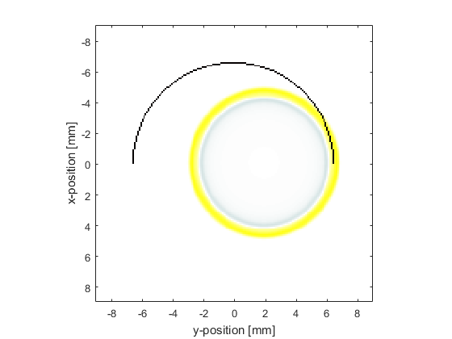
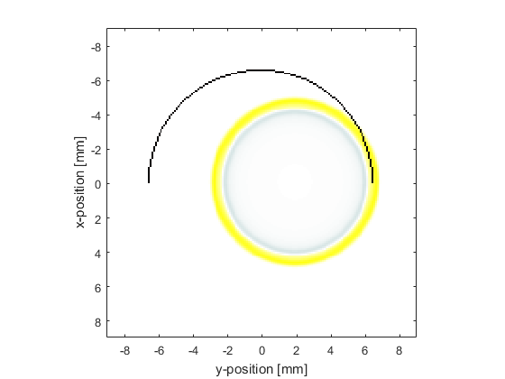

Focussed Detector In 2D Example
This example shows how k-Wave can be used to model the output of a focussed semicircular detector where the directionality arises from spatially averaging across the detector surface. It builds on the Homogeneous Propagation Medium and Using A Binary Sensor Mask examples.
Contents
Defining the sensor geometry
For large single element detectors, the directionality arises because the output is spatially averaged across the pressure field on the transducer surface. Here this effect is simulated using a focussed semicircular detector (defined using a binary sensor mask) created with makeCircle.
% define a sensor as part of a circle centred on the grid sensor_radius = 65; % [grid points] arc_angle = pi; % [rad] sensor.mask = makeCircle(Nx, Ny, Nx/2, Ny/2, sensor_radius, arc_angle);
Running the simulation
To illustrate the directionality of the simulated detector, a disc shaped source (created using makeDisc) is first placed at the focus of the detector and then horizontally offset. A visualisation of the two simulations is given below.
 

The output from the simulated single element detector is then obtained by averaging the time signals recorded at each grid point within the sensor.mask giving a single time series output. The resulting time series for both source positions are shown below. It is clear that the detector produces a larger output for the source nearer the focus of the detector. Note, this example uses an initial value as the source of the wave, but this averaging effect will also be seen for time-varying sources.